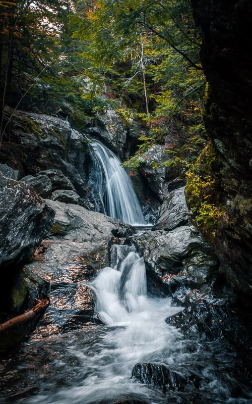

Lake Tahoe

Geographical Location: North America
When it comes to things to do in South Lake Tahoe, you can shred down the mountain from 10,067 ft. at Heavenly Mountain Resort’s peak or you can dive into the depths of Lake Tahoe. It’s more than 1600 ft. deep, making it one of the deepest lakes in North America. Needless to say, there’s plenty of things to do in Lake Tahoe above and below the surface.
All parts of Lake Tahoe are beautiful and have something unique to offer. South Lake Tahoe is popular for its ski resorts like Heavenly, Sierra at Tahoe and Kirkwood ski resorts. South Lake Tahoe is also popular for its restaurants, shopping, casino resorts and vibrant nightlife.
Photo Gallery

Stateline Lake Tahoe

Tahoe beach retreat aerial.

Best thing to do in lake tahoe before summer ends.

Firepit at Zephyr Cove RV Park.

Hikers watching the sunset
Bangkok


Geographical Location: Southeast Asia
Bangkok, Thailand’s capital, is a large city known for ornate shrines and vibrant street life. It is officially known in Thai as Krung Thep Maha Nakhon and colloquially as Krung Thep.
Bangkok welcomes more visitors than any other city in the world and it doesn’t take long to realize why. Bangkok is a city of contrasts with action at every turn. Marvel at the gleaming temples, catch a tuk tuk through bustling Chinatown or take a longtail boat through floating markets. Food is another Bangkok highlight, from local dishes served at humble street stalls to haute cuisine at romantic rooftop restaurants.
Photo Gallery

Khlong Lat Mayom, one of the best floating markets in Bangkok.It is most famous for its food. Try snakehead fish and the shrimps.

The Grand Palace is a complex of buildings at the heart of Bangkok.

Khao San road, which now represents a series of streets, is a place in downtown Bangkok where backpackers and tourists are immediately drawn to from when they first touch down in the airport.

Wat Arun is one of the most popular and well-known places of worship. Famous for its iridescent glow when first light hits its porcelain finish at dawn, it also resembles an ancient city at first glance.
Vermont


Geographical Location: North America
Vermont, located in the northeastern United States, is a state renowned for its natural beauty and charm. It is known for its breathtaking mountain ranges, serene lakes, dense forests, and captivating rural landscapes. The Green Mountain National Forest covers much of the state, offering abundant outdoor activities and adventure opportunities. In winter, skiers flock here to enjoy snow-covered slopes, while summer beckons hikers, cyclists, and campers to explore its pristine wilderness. Furthermore, Vermont boasts picturesque small towns with a countryside vibe and a unique farming landscape, making it a destination where rural charm thrives. Whether you're seeking the beauty of nature or embracing a tranquil way of life, Vermont is a place worth visiting.
Vermont is celebrated not only for its natural beauty but also for its distinctive culture and historical heritage. The state, as the 14th to join the United States, is considered one of the birthplaces of the American Revolution, and as a result, it is rich in historical landmarks and monuments. Additionally, Vermont takes pride in its emphasis on environmentalism and sustainable living, with communities often encouraging organic farming, farmers' markets, and craftsmanship. Furthermore, the state is well-known for its vibrant arts and music culture, offering a plethora of cultural experiences with various music festivals, art galleries, and performing arts venues. In essence, Vermont is a place where the blend of natural splendor, historical legacy, and cultural vibrancy attracts people of diverse interests and backgrounds to explore its wonders.
Photo Gallery

Chasing the fall colors is a must when you’re in Vermont. Peak foliage typically occurs between late-September and mid-October, but can vary considerably between different geographies and elevations across the state. This makes leaf peeping one of the top Vermont fall activities.

It would be a crime to visit Vermont and not stay in a cozy log cabin. From modern A-Frames to rustic chalets, this state offers no shortage of unique accommodations with mountain views and plenty of woods to go around.

Located in the Northeast Kingdom, Lake Willoughby is my favorite lake in the state of Vermont. It’s surrounded by Willoughby State Forest, which looks especially spectacular during the peak fall foliage season.
Though Vermont is no Iceland, you’ll still find plenty of waterfalls worth chasing. The best time to see the waterfalls is in the late spring as the snow melts. Some of the most breathtaking waterfalls in VT include Bingham Falls near Mount Mansfield, Lye Brook Falls in Manchester, and Moss Glen Falls in Granville.

The best Vermont activities are often tucked in nature, and there’s nothing more unique and iconic than Quechee Gorge. This natural treasure is located in Quechee State Park near the VT-NH border. Hike down to the gorge if you wish, but the best views are from the bridge, just a two-minute walk from the parking lot.